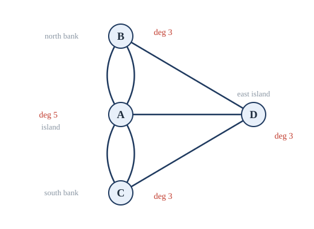
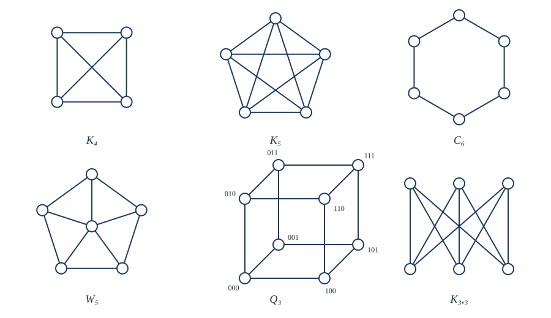
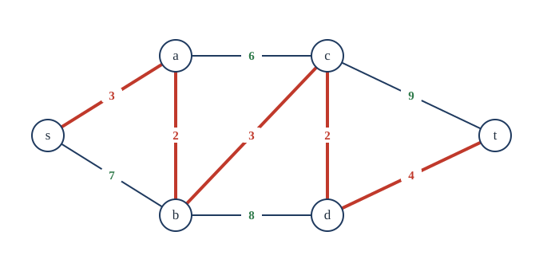
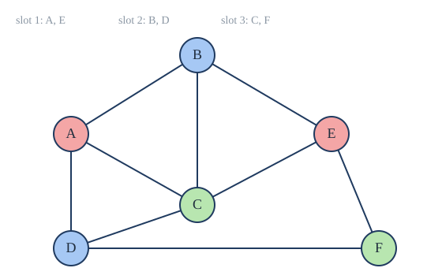

Chapter 11: Graphs¶
Vertices and edges: paths, circuits, planarity and colouring
Learning outcomes
After this chapter you should be able to:
- define graphs, multigraphs and directed graphs, and model problems with them;
- use degrees and the handshaking theorem, and recognise complete, cycle, wheel, cube and bipartite graphs;
- represent graphs by adjacency lists and matrices, and decide whether two graphs are isomorphic;
- reason about paths, connectivity and components, count walks with powers of the adjacency matrix, and find shortest paths;
- decide whether a graph has an Euler circuit or path, and discuss Hamilton circuits;
- use Euler's formula to reason about planar graphs and prove that \(K_5\) and \(K_{3,3}\) are not planar;
- colour graphs, find chromatic numbers of simple families, and apply colouring to scheduling.
11.1 Graphs and where they come from¶
In the eighteenth century the city of Königsberg had seven bridges joining two river banks and two islands. The citizens asked whether one could walk through the city crossing every bridge exactly once. In 1736 Leonhard Euler showed that it is impossible, and in doing so noticed that the shapes of the land and the lengths of the bridges did not matter at all. All that mattered was which land masses were joined by bridges, and how many times. He had invented graph theory.
Definition: graph
A graph \(G = (V, E)\) consists of a non-empty set \(V\) of vertices (or nodes) and a set \(E\) of edges; each edge joins two vertices, its endpoints. In a simple graph each edge joins two different vertices and no two edges join the same pair. A multigraph may have several edges joining the same pair (multiple edges), and a pseudograph may also have edges from a vertex to itself (loops). In a directed graph each edge, called an arc, goes from one vertex to another.
Unless we say otherwise, "graph" means a finite simple undirected graph, and an edge joining \(u\) and \(v\) is written \(\{u, v\}\) or \(uv\).
Figure 11.1 shows Euler's graph of Königsberg: one vertex for each land mass, one edge for each bridge. It is a multigraph.

Graphs model any situation with objects and connections between them:
| Graph | Vertices | Edges |
|---|---|---|
| road map | junctions | roads (weighted by length) |
| computer network | computers, routers | links |
| the web | pages | links (directed) |
| social network | people | friendships |
| course plan | courses | prerequisites (directed) |
| molecule | atoms | chemical bonds |
| exam timetable | exams | pairs of exams with a common student |
Table 11.1. Some graph models.
11.2 Degrees and special graphs¶
Two vertices joined by an edge are adjacent (or neighbours), and the edge is incident with each of them. The degree \(\deg(v)\) of a vertex is the number of edges incident with it, with a loop counting twice. A vertex of degree 0 is isolated.
Theorem 11.1 (the handshaking theorem)
In any graph \(G = (V, E)\) (multiple edges and loops allowed),
Proof. Each edge has two ends and contributes 1 to the degree of each (or 2 to one vertex, if it is a loop). So the sum of the degrees counts every edge exactly twice. \(\blacksquare\)
The name comes from the picture of a party at which some pairs of guests shake hands: the total number of hands shaken is twice the number of handshakes.
Corollary 11.2
Every graph has an even number of vertices of odd degree.
Proof. The sum of all degrees is even. The vertices of even degree contribute an even amount, so the vertices of odd degree must also contribute an even amount, which requires an even number of them. \(\blacksquare\)
Example 11.1: Using the handshaking theorem
Problem. (a) How many edges has a graph with 10 vertices each of degree 6? (b) Can a group of 9 people each be friends with exactly 3 others in the group?
Solution. (a) \(2\lvert E \rvert = 60\), so 30 edges. (b) No: that would be a graph with 9 vertices of odd degree 3, an odd number, contradicting Corollary 11.2.
In a directed graph, the in-degree \(\deg^-(v)\) is the number of arcs into \(v\) and the out-degree \(\deg^+(v)\) the number out of it. Each arc has one tail and one head, so \(\sum_v \deg^-(v) = \sum_v \deg^+(v) = \lvert E \rvert\).
Special families¶
Some graphs appear so often that they have names (Figure 11.2).
- The complete graph \(K_n\) has \(n\) vertices and an edge between every pair: \(\binom{n}{2} = n(n-1)/2\) edges.
- The cycle \(C_n\) (\(n \ge 3\)) has vertices \(v_1, \dots, v_n\) and edges \(v_1v_2, v_2v_3, \dots, v_{n-1}v_n, v_nv_1\).
- The wheel \(W_n\) is \(C_n\) with one extra vertex, the hub, joined to all \(n\) vertices of the cycle.
- The \(n\)-cube \(Q_n\) has the \(2^n\) bit strings of length \(n\) as vertices, with two strings adjacent when they differ in exactly one bit. It models the wiring of some parallel computers.
- A graph is bipartite if its vertices can be split into two sets \(V_1\) and \(V_2\) so that every edge joins a vertex of \(V_1\) to a vertex of \(V_2\). The complete bipartite graph \(K_{m,n}\) has \(\lvert V_1 \rvert = m\), \(\lvert V_2 \rvert = n\), and all \(mn\) possible edges between them.

Example 11.2: Which graphs are bipartite?
Problem. Is \(C_6\) bipartite? Is \(C_5\)? Is \(Q_3\)?
Solution. \(C_6\): put \(v_1, v_3, v_5\) in \(V_1\) and \(v_2, v_4, v_6\) in \(V_2\); every edge joins consecutive vertices, one odd and one even. Bipartite. \(C_5\): if \(v_1 \in V_1\), then \(v_2 \in V_2\), \(v_3 \in V_1\), \(v_4 \in V_2\), \(v_5 \in V_1\); but \(v_5\) is adjacent to \(v_1\), both in \(V_1\). Not bipartite. \(Q_3\): split by the number of 1s, even or odd; changing one bit changes the parity. Bipartite.
The argument for \(C_5\) generalises: a graph is bipartite if and only if it has no cycle of odd length (Section 11.8).
11.3 Representing graphs, and isomorphism¶
A computer stores a graph in one of two main ways.
- An adjacency list gives, for each vertex, the list of its neighbours. It uses space proportional to \(\lvert V \rvert + \lvert E \rvert\) and suits sparse graphs (few edges), such as road maps and the web.
- The adjacency matrix of a graph with vertices \(v_1, \dots, v_n\) is the \(n \times n\) matrix \(A\) with \(a_{ij} = 1\) if \(v_i\) and \(v_j\) are adjacent and \(0\) otherwise (for a multigraph, \(a_{ij}\) is the number of edges). It uses \(n^2\) entries and suits dense graphs, and it answers "are \(u\) and \(v\) adjacent?" in one step. For an undirected graph the matrix is symmetric.
For the graph with vertices \(a, b, c, d\) and edges \(ab, ac, bc, bd, cd\):
| Vertex | Neighbours |
|---|---|
| \(a\) | \(b, c\) |
| \(b\) | \(a, c, d\) |
| \(c\) | \(a, b, d\) |
| \(d\) | \(b, c\) |
Table 11.2. An adjacency list.
Isomorphism¶
The same graph can be drawn in very different ways. What matters is the structure, not the picture.
Definition: isomorphism
Simple graphs \(G_1 = (V_1, E_1)\) and \(G_2 = (V_2, E_2)\) are isomorphic if there is a bijection \(f : V_1 \to V_2\) such that \(u\) and \(v\) are adjacent in \(G_1\) if and only if \(f(u)\) and \(f(v)\) are adjacent in \(G_2\). Such an \(f\) is an isomorphism.
To show two graphs are isomorphic, give an isomorphism and check every edge. To show they are not, find a property that is preserved by every isomorphism (an invariant) on which they differ: the number of vertices, the number of edges, the list of degrees, the presence of a cycle of a given length, being bipartite, being connected.
Example 11.3: Isomorphic or not?
Problem. (a) \(G_1\) has vertices \(1, 2, 3, 4\) and edges \(12, 23, 34, 41\). \(G_2\) has vertices \(a, b, c, d\) and edges \(ac, cb, bd, da\). Are they isomorphic? (b) Are \(C_6\) and the graph made of two separate triangles isomorphic?
Solution. (a) Both are 4-cycles. Following the cycles, \(1 \mapsto a\), \(2 \mapsto c\), \(3 \mapsto b\), \(4 \mapsto d\) sends the edges \(12, 23, 34, 41\) to \(ac, cb, bd, da\): an isomorphism. (b) Both have 6 vertices, 6 edges and every degree equal to 2, so the simple invariants agree. But two triangles contain a cycle of length 3 and \(C_6\) does not; also \(C_6\) is connected and the triangles are not. Not isomorphic.
No efficient algorithm is known that decides isomorphism for all graphs, although the best known methods are much faster than trying all \(n!\) bijections, and in practice most pairs are quickly told apart by invariants.
11.4 Paths and connectivity¶
Definitions: walk, path, circuit
A walk of length \(k\) from \(u\) to \(v\) is a sequence of vertices \(u = x_0, x_1, \dots, x_k = v\) in which consecutive vertices are adjacent. It is a path if no vertex is repeated, and a circuit (or closed walk) if \(u = v\). A cycle is a circuit of length at least 3 with no repeated vertex other than the first and last.
(Terminology differs between books: some say "simple path" for what we call a path. Read definitions carefully.)
Definition: connected
A graph is connected if there is a path between every pair of vertices. The maximal connected pieces of a graph are its connected components.
If there is a walk from \(u\) to \(v\) there is a path: whenever a vertex repeats, cut out the loop between its two occurrences. So "joined by a walk" and "joined by a path" mean the same, and "is joined by a path to" is an equivalence relation whose classes are the components (Section 5.4).
A vertex whose removal (with its edges) increases the number of components is a cut vertex, and an edge whose removal does so is a bridge. In a network, cut vertices and bridges are single points of failure.
Counting walks¶
Theorem 11.3
Let \(A\) be the adjacency matrix of a graph with vertices \(v_1, \dots, v_n\). For \(k \ge 1\), the \((i, j)\) entry of \(A^k\) is the number of walks of length \(k\) from \(v_i\) to \(v_j\).
Proof. By induction on \(k\). For \(k = 1\) it is the definition. Suppose it holds for \(k\). A walk of length \(k + 1\) from \(v_i\) to \(v_j\) is a walk of length \(k\) from \(v_i\) to some \(v_m\) followed by an edge from \(v_m\) to \(v_j\). So the number of such walks is \(\sum_m (A^k)_{im}\, a_{mj}\), which is the \((i, j)\) entry of \(A^k A = A^{k+1}\). \(\blacksquare\)
For the graph of Table 11.2,
so there are 2 walks of length 2 from \(a\) to \(d\) (\(a, b, d\) and \(a, c, d\)), and the diagonal entries are the degrees (a walk of length 2 from a vertex back to itself goes out along an edge and straight back).
Shortest paths¶
In an unweighted graph, the distance between two vertices is the length of a shortest path. Breadth-first search finds all distances from a vertex \(s\): visit \(s\); then all its neighbours (distance 1); then all their unvisited neighbours (distance 2); and so on, level by level. It also decides connectivity: the graph is connected exactly when the search from any vertex reaches every vertex.
In a weighted graph each edge has a length (a distance, a cost, a time), and the length of a path is the sum of its edge lengths. Dijkstra's algorithm finds shortest paths from a source \(s\) when all weights are non-negative. It keeps a tentative distance for each vertex, starting at \(0\) for \(s\) and \(\infty\) for the others, and repeatedly:
- chooses the unfinished vertex \(u\) with the smallest tentative distance, and declares it finished;
- for each neighbour \(v\) of \(u\), if going through \(u\) is shorter, that is, if \(\mathrm{dist}(u) + w(u, v) < \mathrm{dist}(v)\), it lowers \(\mathrm{dist}(v)\) to that value.

Example 11.4: Dijkstra's algorithm
Problem. Find the shortest distances from \(s\) in the graph of Figure 11.3.
Solution. Each row shows the tentative distances after the vertex in the first column is finished.
| Finished | \(s\) | \(a\) | \(b\) | \(c\) | \(d\) | \(t\) |
|---|---|---|---|---|---|---|
| \(s\) | 0 | 3 | 7 | \(\infty\) | \(\infty\) | \(\infty\) |
| \(a\) | 3 | 5 | 9 | \(\infty\) | \(\infty\) | |
| \(b\) | 5 | 8 | 13 | \(\infty\) | ||
| \(c\) | 8 | 10 | 17 | |||
| \(d\) | 10 | 14 | ||||
| \(t\) | 14 |
The distance to \(t\) is 14. Recording, for each vertex, the neighbour through which its distance was last lowered recovers the path \(s, a, b, c, d, t\).
Why does it work? When \(u\) is chosen, every other unfinished vertex has tentative distance at least \(\mathrm{dist}(u)\), and since weights are non-negative, no path that passes through an unfinished vertex can reach \(u\) more cheaply; so \(\mathrm{dist}(u)\) is final. (With negative weights this argument fails, and so does the algorithm.) A short implementation uses a priority queue:
import heapq
def dijkstra(graph, source):
dist = {v: float("inf") for v in graph}
dist[source] = 0
queue = [(0, source)]
while queue:
d, u = heapq.heappop(queue)
if d > dist[u]:
continue # an out-of-date entry
for v, w in graph[u]:
if d + w < dist[v]:
dist[v] = d + w
heapq.heappush(queue, (dist[v], v))
return dist
edges = [("s","a",3), ("s","b",7), ("a","b",2), ("a","c",6), ("b","c",3),
("b","d",8), ("c","d",2), ("c","t",9), ("d","t",4)]
graph = {v: [] for e in edges for v in e[:2]}
for u, v, w in edges:
graph[u].append((v, w))
graph[v].append((u, w))
print(dijkstra(graph, "s"))
{'s': 0, 'a': 3, 'b': 5, 'c': 8, 'd': 10, 't': 14}
11.5 Euler circuits and paths¶
Definition: Euler circuit and path
An Euler circuit in a graph is a circuit that uses every edge exactly once. An Euler path uses every edge exactly once but may start and end at different vertices.
The Königsberg question asks for an Euler path in the multigraph of Figure 11.1. Euler's answer depends only on degrees.
Theorem 11.4 (Euler)
A connected multigraph with at least two vertices has an Euler circuit if and only if every vertex has even degree. It has an Euler path but no Euler circuit if and only if exactly two vertices have odd degree; the path then starts at one of them and ends at the other.
Proof. Necessity. Follow an Euler circuit. Every time it passes through a vertex it enters along one edge and leaves along another, using two of that vertex's edges; the starting vertex is left at the start and entered at the end, which also pairs two edges. Since every edge is used exactly once, every degree is even. For an Euler path, the same argument applies to every vertex except the two ends, which have odd degree.
Sufficiency (circuit). Suppose every degree is even. Start at any vertex \(v\) and walk along unused edges, never reusing an edge, as long as possible. Every time the walk enters a vertex \(w \ne v\), it has used an odd number of \(w\)'s edges, and since \(\deg(w)\) is even there is an unused edge to leave by. So the walk can only get stuck at \(v\): it is a circuit \(C\). If \(C\) uses every edge, we are done. Otherwise, because the graph is connected, some vertex \(u\) on \(C\) has an unused edge. In the graph of unused edges every degree is still even (we removed a circuit, which takes two edges at each visit), so the same procedure starting at \(u\) produces a circuit \(C'\) of unused edges. Splice \(C'\) into \(C\) at \(u\), giving a longer circuit. Repeat until every edge is used; since the graph is finite, this ends.
Sufficiency (path). If exactly \(u\) and \(w\) have odd degree, add a new edge \(uw\). Now every degree is even, so there is an Euler circuit; remove the new edge from it to obtain an Euler path from \(u\) to \(w\). \(\blacksquare\)
In Königsberg all four vertices have odd degree (5, 3, 3, 3), so there is neither an Euler circuit nor an Euler path: the walk is impossible.
The proof is an algorithm (Hierholzer's algorithm) that finds an Euler circuit in time proportional to the number of edges.
Example 11.5: Drawing without lifting the pen
Problem. The "open envelope" figure has vertices \(1, 2, 3, 4\) at the corners of a square (1 bottom left, 2 bottom right, 3 top right, 4 top left) and a roof vertex \(5\) above, with edges \(12, 23, 34, 41\) (the square), \(13, 24\) (the diagonals) and \(35, 45\) (the roof). Can it be drawn in one stroke without retracing an edge?
Solution. Degrees: \(\deg 1 = 3\), \(\deg 2 = 3\), \(\deg 3 = 4\), \(\deg 4 = 4\), \(\deg 5 = 2\). Exactly two vertices (1 and 2) have odd degree, so there is an Euler path from 1 to 2 but no Euler circuit. One such path is \(1, 2, 4, 1, 3, 4, 5, 3, 2\), which uses all 8 edges once each.
For directed graphs the condition becomes: a connected directed multigraph has an Euler circuit if and only if every vertex has in-degree equal to out-degree. Euler circuits arise in planning routes for postal delivery, street cleaning and snow ploughs, and in assembling DNA sequences from fragments.
11.6 Hamilton circuits and paths¶
Definition: Hamilton circuit and path
A Hamilton path visits every vertex exactly once. A Hamilton circuit is a cycle that visits every vertex exactly once and returns to its start.
The definitions look like those of Euler, with vertices instead of edges, but the problems are completely different. No simple condition is known that decides whether a graph has a Hamilton circuit, and the problem is NP-complete: no efficient algorithm is known, and finding one would give efficient algorithms for thousands of other hard problems. What we have are sufficient conditions and ad hoc arguments.
Theorem 11.5 (Dirac; Ore)
Let \(G\) be a simple graph with \(n \ge 3\) vertices.
- Dirac (1952): if every vertex has degree at least \(n/2\), then \(G\) has a Hamilton circuit.
- Ore (1960): if \(\deg(u) + \deg(v) \ge n\) for every pair of non-adjacent vertices \(u, v\), then \(G\) has a Hamilton circuit.
These conditions are sufficient, not necessary: \(C_n\) has a Hamilton circuit although every degree is only 2.
Showing that a graph has no Hamilton circuit takes an argument. Useful observations: a vertex of degree 2 forces both its edges into any Hamilton circuit; once a vertex has two circuit edges, its other edges can be discarded; and a Hamilton circuit cannot contain a smaller cycle.
Example 11.6: No Hamilton circuit
Problem. Show that \(K_{2,3}\) has no Hamilton circuit, and that a graph with a cut vertex has none.
Solution. A Hamilton circuit in a bipartite graph alternates between the two sides, so it has equally many vertices on each side; \(K_{2,3}\) has 2 and 3. A Hamilton circuit through a cut vertex \(v\) visits \(v\) only once, but must pass from one component of \(G - v\) to another and back, which requires passing through \(v\) twice.
The famous applied version is the travelling salesperson problem: in a complete graph with weighted edges (distances between cities), find a Hamilton circuit of least total weight. With \(n\) cities there are \((n-1)!/2\) different circuits, about \(6 \times 10^{16}\) for 20 cities, so trying them all is hopeless; practical methods find excellent, though not always provably best, tours for thousands of cities.
11.7 Planar graphs¶
Can three houses each be connected to three utilities (water, gas, electricity) by lines that do not cross? This asks whether \(K_{3,3}\) can be drawn in the plane without crossings.
Definition: planar graph
A graph is planar if it can be drawn in the plane with no two edges crossing. Such a drawing is a planar representation, and it divides the plane into regions called faces, one of which, the outer face, is unbounded.
\(K_4\) is planar, although its most common drawing (a square with both diagonals) has a crossing: move one diagonal outside the square. Planarity is a property of the graph, not of a particular drawing.
Theorem 11.6 (Euler's formula)
If a connected planar simple graph with \(v\) vertices and \(e\) edges is drawn in the plane with \(f\) faces, then
Proof. By induction on \(e\). If the graph has no cycle, it is a tree (Chapter 12), with \(e = v - 1\) and one face, and \(v - (v - 1) + 1 = 2\). Otherwise choose an edge on a cycle. The cycle separates the plane, so the two sides of that edge are different faces; removing the edge merges them into one face and leaves the graph connected. The new graph has \(v\) vertices, \(e - 1\) edges and \(f - 1\) faces, and by the inductive hypothesis \(v - (e - 1) + (f - 1) = 2\), which is \(v - e + f = 2\). \(\blacksquare\)
The cube, drawn flat, has \(v = 8\), \(e = 12\), \(f = 6\): \(8 - 12 + 6 = 2\). The formula is the same as Euler's formula for convex polyhedra, and it says that the number of faces does not depend on how a planar graph is drawn.
Corollary 11.7
Let \(G\) be a connected planar simple graph with \(v \ge 3\) vertices and \(e\) edges. Then
- \(e \le 3v - 6\);
- if \(G\) has no cycle of length 3, then \(e \le 2v - 4\);
- \(G\) has a vertex of degree at most 5.
Proof. (1) Each face is bounded by at least 3 edges (in a simple graph with at least 3 vertices), and each edge borders at most 2 faces. Counting edge-face incidences, \(3f \le 2e\), so \(f \le 2e/3\). Then \(2 = v - e + f \le v - e + 2e/3\), giving \(e \le 3v - 6\). (2) Without triangles each face has at least 4 edges, so \(4f \le 2e\), and the same calculation gives \(e \le 2v - 4\). (3) If every vertex had degree at least 6, then \(2e \ge 6v\), so \(e \ge 3v > 3v - 6\), contradicting (1). \(\blacksquare\)
Example 11.7: Two non-planar graphs
Problem. Show that \(K_5\) and \(K_{3,3}\) are not planar.
Solution. \(K_5\) has \(v = 5\) and \(e = 10\), but \(3v - 6 = 9 < 10\), contradicting Corollary 11.7(1). \(K_{3,3}\) is bipartite, so it has no cycle of odd length and in particular no triangle; it has \(v = 6\) and \(e = 9\), but \(2v - 4 = 8 < 9\), contradicting (2). So the three houses cannot be joined to the three utilities without crossings.
The inequality only works one way
\(e \le 3v - 6\) is a necessary condition for planarity, not a sufficient one. \(K_{3,3}\) satisfies \(9 \le 12\) and is still not planar; we needed the sharper bound for triangle-free graphs.
In a sense, \(K_5\) and \(K_{3,3}\) are the only obstacles. A subdivision of a graph is obtained by inserting new vertices of degree 2 into its edges.
Theorem 11.8 (Kuratowski, 1930)
A graph is planar if and only if it does not contain a subdivision of \(K_5\) or of \(K_{3,3}\) as a subgraph.
The proof is beyond this book. Planarity matters in the design of circuit boards and chips, where wires on one layer must not cross.
11.8 Graph colouring¶
A map is to be coloured so that countries sharing a border get different colours. Replacing each country by a vertex and each shared border by an edge turns this into a question about graphs.
Definition: colouring and chromatic number
A colouring of a simple graph assigns a colour to each vertex so that adjacent vertices get different colours. The chromatic number \(\chi(G)\) is the least number of colours in a colouring of \(G\).
To show \(\chi(G) = k\), give a colouring with \(k\) colours and show that \(k - 1\) colours are not enough, usually by finding a subgraph that needs \(k\) colours, such as \(K_k\).
Example 11.8: Chromatic numbers of special graphs
Problem. Find \(\chi(K_n)\), \(\chi(C_n)\), \(\chi(K_{m,n})\) and \(\chi(W_5)\).
Solution. \(\chi(K_n) = n\): every two vertices are adjacent, so all colours must differ. \(\chi(C_n) = 2\) if \(n\) is even (alternate two colours) and \(3\) if \(n\) is odd (alternating fails when the cycle closes, as for \(C_5\) in Example 11.2, and a third colour on one vertex fixes it). \(\chi(K_{m,n}) = 2\): colour each side with its own colour. \(\chi(W_5) = 4\): the rim \(C_5\) needs 3 colours, and the hub is adjacent to every rim vertex, so it needs a fourth.
Theorem 11.9
A graph with at least one edge has chromatic number 2 if and only if it is bipartite, if and only if it has no cycle of odd length.
Proof. A 2-colouring is exactly a split into two sides with every edge going across, so \(\chi(G) \le 2\) means bipartite. A cycle of odd length needs 3 colours (as in Example 11.8), so a bipartite graph has none. Conversely, suppose \(G\) has no odd cycle; it is enough to 2-colour each component. Pick a vertex \(r\) in the component and colour each vertex by the parity of its distance from \(r\). If two adjacent vertices \(x\) and \(y\) had the same parity, then shortest paths from \(r\) to \(x\) and to \(y\), together with the edge \(xy\), would form a closed walk of odd length, and a closed walk of odd length always contains a cycle of odd length, a contradiction. \(\blacksquare\)
The four colour theorem¶
For planar graphs, the number of colours needed is small. The easy part is a proof that 6 colours always suffice.
Theorem 11.10 (six colours suffice)
Every planar simple graph has chromatic number at most 6.
Proof. By induction on the number of vertices. A graph with at most 6 vertices can be coloured with 6 colours. Given a planar graph \(G\) with more vertices, Corollary 11.7(3) (applied to a component with at least 3 vertices, or trivially otherwise) gives a vertex \(v\) of degree at most 5. Remove \(v\); the smaller graph is planar, so by the inductive hypothesis it can be coloured with 6 colours. The neighbours of \(v\) use at most 5 of them, so a sixth is free for \(v\). \(\blacksquare\)
With more work the same idea gives 5 colours. That 4 colours always suffice was conjectured in 1852 and proved only in 1976, by Kenneth Appel and Wolfgang Haken, with a proof that relied on a computer to check a large number of cases. It was the first major theorem proved in this way.
Theorem 11.11 (the four colour theorem)
Every planar graph has chromatic number at most 4.
Colouring in practice: scheduling¶
Deciding whether a general graph can be coloured with 3 colours is NP-complete, so in practice colourings are found by heuristics. The simplest is the greedy algorithm: take the vertices in some order and give each the first colour not used by its already-coloured neighbours. It uses at most \(\Delta + 1\) colours, where \(\Delta\) is the largest degree, but it may use more than \(\chi(G)\), depending on the order.
Example 11.9: An exam timetable
Problem. Six exams, Algebra (A), Biology (B), Chemistry (C), Drama (D), Economics (E) and French (F), must be scheduled so that no student has two exams in the same slot. The pairs with a common student are AB, AC, AD, BC, BE, CD, CE, DF, EF. What is the least number of slots?
Solution. Make a graph with a vertex for each exam and an edge for each conflicting pair (Figure 11.4); a slot is a colour. A, B, C form a triangle, so at least 3 slots are needed. Greedy colouring in alphabetical order: A gets slot 1; B (adjacent to A) slot 2; C (adjacent to A, B) slot 3; D (adjacent to A, C) slot 2; E (adjacent to B, C) slot 1; F (adjacent to D, E) slot 3. So 3 slots suffice and are necessary: slot 1 for A and E, slot 2 for B and D, slot 3 for C and F.

Compilers solve a similar problem when they assign the variables of a program to the processor's few registers: variables that are in use at the same time conflict, and the registers are the colours.
11.9 Summary¶
Summary
- A graph has vertices and edges; multigraphs allow parallel edges, pseudographs loops, directed graphs arcs.
- Handshaking: \(\sum \deg(v) = 2\lvert E \rvert\), so the number of odd-degree vertices is even.
- Special graphs: \(K_n\), \(C_n\), \(W_n\), \(Q_n\), \(K_{m,n}\). A graph is bipartite iff it has no odd cycle.
- Graphs are stored as adjacency lists (sparse) or matrices (dense). Isomorphic graphs have the same structure; invariants tell non-isomorphic graphs apart. \((A^k)_{ij}\) counts walks of length \(k\).
- BFS finds distances in unweighted graphs; Dijkstra's algorithm finds shortest paths with non-negative weights.
- A connected multigraph has an Euler circuit iff every degree is even, and an Euler path iff exactly 0 or 2 degrees are odd. Hamilton circuits have no such test; Dirac's and Ore's conditions are sufficient.
- Euler's formula \(v - e + f = 2\) gives \(e \le 3v - 6\) (and \(e \le 2v - 4\) without triangles), so \(K_5\) and \(K_{3,3}\) are not planar.
- \(\chi(G)\) is the least number of colours; planar graphs need at most 4. Colouring models scheduling and register allocation.
11.10 Exercises¶
Exercise 1
Is there a simple graph with degrees 3, 3, 3, 3, 2? With degrees 4, 4, 3, 2, 1? With degrees 3, 3, 3, 1?
Answer
3, 3, 3, 3, 2: the sum is 14, even; such a graph exists (\(K_4\) with one edge subdivided by a new vertex). 4, 4, 3, 2, 1: the sum is 14, but two vertices of degree 4 in a 5-vertex simple graph are adjacent to all others, so every vertex has degree at least 2, contradicting the 1. Impossible. 3, 3, 3, 1: the sum is 10; the three vertices of degree 3 must each be adjacent to all three other vertices, so the fourth would have degree 3, not 1. Impossible.
Exercise 2
How many edges do \(K_8\), \(C_8\), \(W_8\), \(Q_4\) and \(K_{3,5}\) have?
Answer
\(K_8\): \(\binom{8}{2} = 28\). \(C_8\): 8. \(W_8\): \(8 + 8 = 16\). \(Q_4\): 16 vertices of degree 4, so \(16 \cdot 4/2 = 32\). \(K_{3,5}\): 15.
Exercise 3
Show that in any graph with at least two vertices, two vertices have the same degree.
Answer
In a simple graph with \(n\) vertices the possible degrees are \(0, 1, \dots, n-1\). Degrees \(0\) and \(n - 1\) cannot both occur (a vertex adjacent to all others leaves no isolated vertex). So at most \(n - 1\) values are available for \(n\) vertices, and by the pigeonhole principle two vertices share a degree.
Exercise 4
For which \(n\) does \(K_n\) have an Euler circuit? For which \(m, n\) does \(K_{m,n}\)?
Answer
In \(K_n\) every degree is \(n - 1\), which is even when \(n\) is odd: Euler circuits exist exactly for odd \(n \ge 3\). In \(K_{m,n}\) the degrees are \(n\) (on the side of size \(m\)) and \(m\), so both \(m\) and \(n\) must be even.
Exercise 5
Does \(Q_3\) have a Hamilton circuit? Give one or explain why not.
Answer
Yes: \(000, 001, 011, 010, 110, 111, 101, 100, 000\). Each step changes one bit. (This sequence is a Gray code; every \(Q_n\) with \(n \ge 2\) has a Hamilton circuit.)
Exercise 6
A connected planar simple graph has 20 vertices, each of degree 3. Into how many faces does a planar drawing divide the plane?
Answer
\(e = 20 \cdot 3/2 = 30\), and \(f = 2 - v + e = 2 - 20 + 30 = 12\). (This is the graph of the dodecahedron, with 12 pentagonal faces.)
Exercise 7
Show that the Petersen graph, or any graph you like with \(v = 10\) and \(e = 15\) and no cycles of length 3 or 4, is not planar. (Hint: adapt Corollary 11.7 to faces with at least 5 edges.)
Answer
If every face has at least 5 edges, \(5f \le 2e\), so \(f \le 6\). Euler's formula would require \(f = 2 - v + e = 2 - 10 + 15 = 7\). Contradiction, so no planar drawing exists. (The Petersen graph has girth 5, so the hypothesis holds.)
Exercise 8
Find the chromatic number of the graph obtained from \(C_6\) by adding the three "long diagonals" joining opposite vertices.
Answer
Label the cycle \(v_1, \dots, v_6\) and add \(v_1v_4\), \(v_2v_5\), \(v_3v_6\). Colour odd-numbered vertices red and even-numbered blue: cycle edges join odd to even, and each diagonal joins \(v_i\) to \(v_{i+3}\), of opposite parity. So \(\chi = 2\) (the graph is \(K_{3,3}\)).
Exercise 9
Use Dijkstra's algorithm on Figure 11.3 to find the distance from \(t\) to \(s\), and check that it agrees with Example 11.4.
Answer
From \(t\): finish \(t\) (0), then \(d\) (4), then \(c\) (6), then \(b\) (\(6 + 3 = 9\)), then \(a\) (\(9 + 2 = 11\), better than \(6 + 6 = 12\)), then \(s\) (\(11 + 3 = 14\)). Distance 14, as expected for an undirected graph.
11.11 Quiz¶
Check your understanding of graphs
Exercise 1
A graph has degrees 1, 2, 2, 3, 4. How many edges does it have?
Answer
6
Exercise 2
How many edges does the complete graph K6 have?
Answer
15
Exercise 3
A connected multigraph has an Euler circuit exactly when
- every vertex has even degree
- every vertex has odd degree
- it has a Hamilton circuit
- it is planar
Answer
every vertex has even degree
Exercise 4
Can the Königsberg bridges be crossed in a walk using each bridge exactly once?
- yes
- no
Answer
no
All four vertices have odd degree.
Exercise 5
A connected planar graph has 6 vertices and 9 edges. How many faces does a planar drawing have?
Answer
5
Exercise 6
Which graph is not planar?
- K4
- K5
- C10
- Q3
Answer
K5
Exercise 7
What is the chromatic number of the cycle C7?
Answer
3